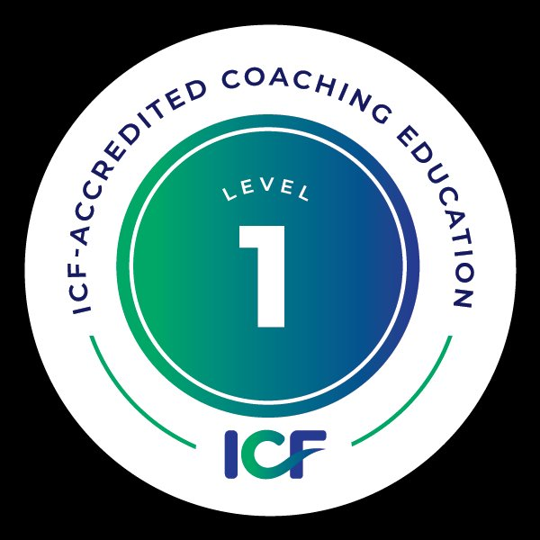
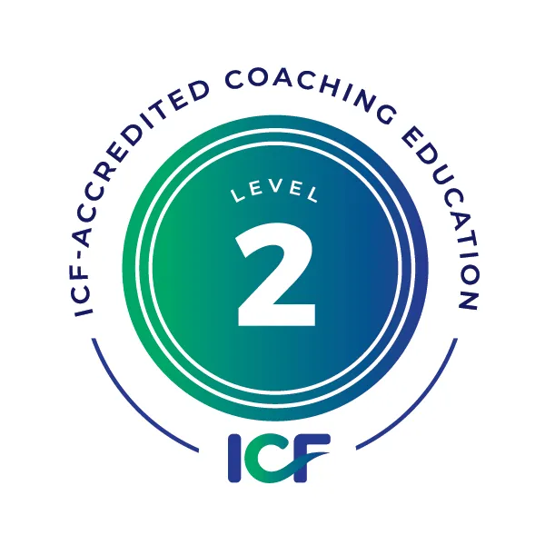

Quattro percorsi verso le credenziali ICF (ACC, PCC, ACTC). Ognuno porta al Diploma Professional Coach Ariadne, da cui puoi applicare per la credenziale che corrisponde ai tuoi obiettivi.
Scorri per esplorarePer tutta la durata del tuo percorso fai parte della community attiva di Ariadne. Cinque servizi inclusi che fanno parte di ogni programma — non un extra, ma il modo in cui lavoriamo.
La community di coach, trainer, manager. Apericoaching mensili, networking, eventi aperti.
Approfondimenti pratici online e in presenza, inclusi nell'annualità.
Esperienze di pratica con i colleghi del corso e con coach di altre scuole.
Ore di coaching pratico con supervisione, fondamentali per le ore richieste da ICF.
Sessioni dedicate alla preparazione, mentoring e simulazioni.
Quattro modi diversi di arrivare alla stessa cosa: la tua trasformazione come coach.

→ Verso la credenziale ACC
Il Core Coaching Program è il programma di primo livello accreditato ICF Level 1: 60 ore di formazione in aula su quattro weekend, più 10 ore di mentor coaching individuale.
Copre integralmente le ICF Core Competencies e ti porta dalle basi del coaching professionale fino all'esame finale, con il nostro approccio creativo-esperienziale come filo conduttore. Edizioni in autunno e primavera, sedi Milano e Cascina Ovi a Segrate.
Le fondamenta del coaching creativo-esperienziale e ICF Core Competencies.
Mentor coaching individuale, simulazioni d'esame e prova finale ICF Level 1.
Diploma cartaceo che attesta la frequentazione del percorso e le capacità acquisite secondo l'approccio creativo-esperienziale Ariadne.
100 ore di pratica coaching documentate (50 nelle 18 mesi prima dell'application).
Non obbligatorio. La credenziale è una scelta tua.

→ Verso la credenziale PCC
Il Professional Coaching Program è il programma di secondo livello accreditato ICF Level 2. Combina due annualità progressive — Core Coaching e Advanced Coaching — per un totale di 125 ore di formazione in aula e 10 ore di mentor coaching, in linea con i requisiti formativi richiesti per la credenziale PCC.
Il primo anno (Core Coaching) costruisce le competenze fondamentali. Il secondo anno (Advanced Coaching) approfondisce dimensioni più sofisticate del coaching: presenza sistemica, lavoro con i livelli di senso, uso del sé come strumento, complessità relazionale.
Le fondamenta del coaching creativo-esperienziale e ICF Core Competencies.
Approfondimento sistemico, presenza, sentire profondo, uso del sé come strumento di coaching.
Mentor coaching individuale ed esame finale ICF Level 2.
Diploma cartaceo che attesta la frequentazione del percorso e le capacità acquisite secondo l'approccio creativo-esperienziale Ariadne.
500 ore di pratica coaching documentate (50 nelle 18 mesi prima dell'application).
Non obbligatorio. La credenziale è una scelta tua.
→ Verso le credenziali PCC e ACTC
Il Professional Team Coaching Program è il programma di secondo livello accreditato ICF Level 2 con specializzazione in team coaching. Combina Core Coaching (anno 1) e Team Coaching (anno 2) per 125 ore di formazione e 10 ore di mentor coaching.
Il modulo Team Coaching del secondo anno copre le ICF Team Coaching Competencies: lavoro con sistemi e dinamiche di gruppo, contracting con team multipli, leadership coaching, coaching collettivo. Il programma è accreditato sia ICF Level 2 sia ACTC Education.
Le fondamenta del coaching creativo-esperienziale.
Lavoro con i team: dinamiche sistemiche, contracting collettivo, leadership coaching, ICF Team Coaching Competencies.
Mentor coaching individuale ed esame finale ICF Level 2.
Diploma cartaceo che attesta la frequentazione del percorso e le capacità acquisite secondo l'approccio creativo-esperienziale Ariadne.
500 ore di pratica coaching documentate.
Non obbligatorio.
Credenziale ICF attiva (ACC/PCC/MCC) + 5 team coaching engagements negli ultimi 5 anni.
Non obbligatorio.
→ Verso la credenziale ACTC
Il Team Coaching Program è un programma specialistico autonomo, dedicato a coach che hanno già completato un percorso equivalente al Core Coaching presso un'altra scuola riconosciuta e vogliono specializzarsi nel team coaching.
Include 65 ore di formazione sulle ICF Team Coaching Competencies più 5 ore di Coaching Supervision (richieste specificamente da ICF per la credenziale ACTC, in sostituzione del Mentoring previsto per le credenziali individuali). Edizione pilota 2026 limitata a 12 partecipanti.
Lavoro con i team: dinamiche sistemiche, coaching collettivo, ICF Team Coaching Competencies.
Coaching Supervision (non Mentoring) come richiesto da ICF per la credenziale ACTC, più esame finale.
Diploma cartaceo che attesta la frequentazione del percorso e le capacità acquisite secondo l'approccio creativo-esperienziale Ariadne.
Credenziale ICF attiva (ACC/PCC/MCC) come prerequisito + 5 team coaching engagements negli ultimi 5 anni.
Non obbligatorio.
In due modalità diverse, sempre con la stessa profondità formativa.
Percorsi individuali su Core, Advanced o Team Coaching per manager che vogliono sviluppare competenze di coaching nella propria leadership e nel potenziale delle persone che guidano.
Scopri di più →Percorsi da svolgere in azienda per gruppi di manager o coach interni, con progettazione customizzata sui bisogni dell'organizzazione e dei team coinvolti.
Scopri di più →Per chi vuole approfondire uno specifico aspetto, indipendentemente dai programmi che portano alla credenziale.
Le fondamenta del coaching creativo-esperienziale. Per esplorare il metodo senza puntare al diploma.
L'approfondimento sistemico per coach esperti. Richiede Core o equivalente.
Specializzazione nel lavoro con i team. Richiede Core o equivalente.
Sembra il punto di partenza giusto. Vai alla sezione del programma per scoprirne i dettagli.
Quello che ti suggeriamo è solo un punto di partenza. Ogni persona ha la sua storia, il suo contesto, i suoi obiettivi. Il modo migliore per scegliere è una conversazione di 30 minuti con uno dei trainer.
Richiedi un colloquio →Il Diploma Professional Coach Ariadne è il riconoscimento del percorso formativo svolto da noi. Le credenziali ICF (ACC, PCC, ACTC) sono certificazioni internazionali rilasciate dall'International Coaching Federation, che richiedono ore di pratica documentate dopo la formazione. Sono complementari, non sovrapposte.
Sì, assolutamente. Molti partecipanti scelgono i nostri percorsi per acquisire competenze di coaching da applicare nel proprio ruolo (manager, HR, leader, formatore) senza puntare alla credenziale ICF. Il Diploma Ariadne è un risultato a sé.
Dipende dal tuo ritmo. La pratica supervisionata è già parte del percorso, e durante l'annualità inizi ad accumulare ore. Per la ACC (100 ore) tipicamente bastano 6-12 mesi dopo la fine del corso. Per la PCC (500 ore) servono mediamente 2-3 anni di pratica continuativa.
Sì. I nostri programmi sono accreditati ICF, che è la federazione internazionale di riferimento del coaching. Le credenziali ICF sono riconosciute in tutto il mondo.
Sì, è possibile iscriversi al singolo modulo (Core, Advanced o Team) senza puntare al diploma o alla credenziale. È un'opzione utile per approfondire un aspetto specifico.
Sì. Tutte le quote possono essere rateizzate. Inoltre offriamo una tariffa early bird per chi si iscrive in anticipo. Per situazioni particolari (alumni, iscrizioni multiple, percorsi aziendali) sono previste agevolazioni dedicate.
Un colloquio gratuito di 30 minuti con uno dei trainer Ariadne. Per capire insieme da dove conviene iniziare.
Richiedi un colloquio →